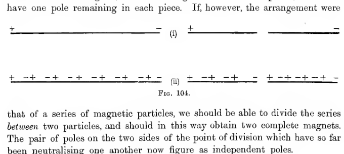
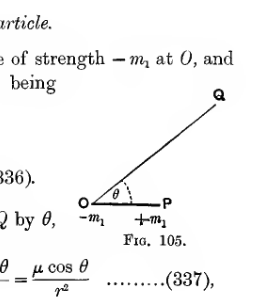
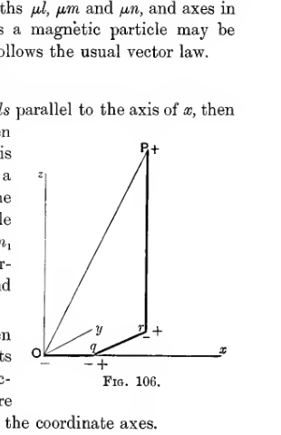
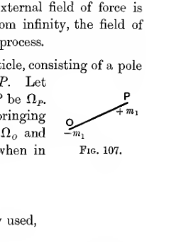
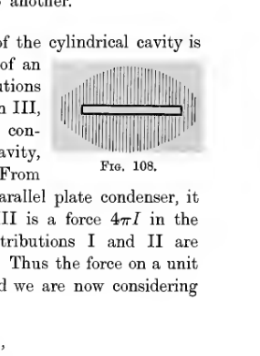
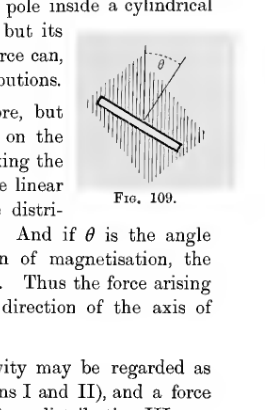
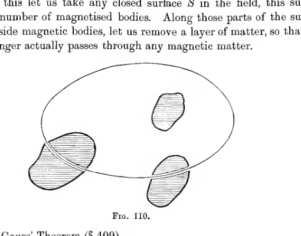
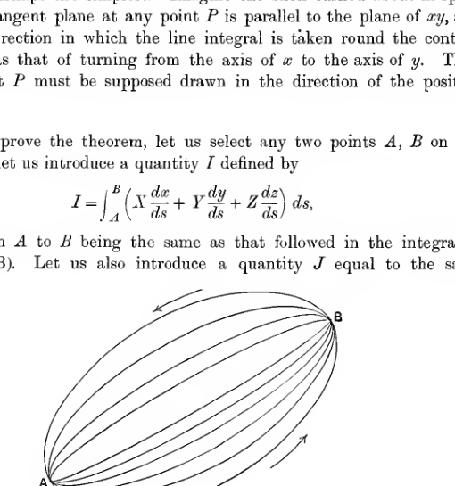
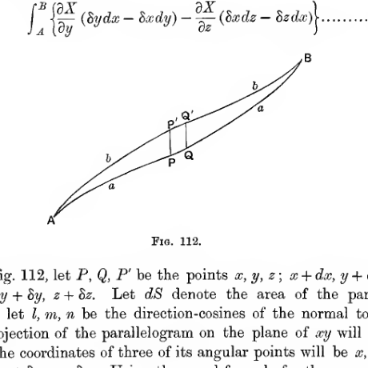

Chapter XI#
Permanent Magnetism#
Physical Phenomena.#
398. It is found that certain bodies, known as magnets, will attract or repel one another, while a magnet will also exert forces on pieces of iron or steel which are not themselves magnets, these forces being invariably attractive. The most familiar fact of magnetism, namely the tendency of a magnetic needle to point north and south, is simply a particular instance of the first of the sets of phenomena just mentioned, it being found that the earth itself may be regarded as a vast aggregation of magnets.
The simplest piece of apparatus used for the experimental study of magnetism is that known as a bar-magnet. This consists of a bar of steel which shews the property of attracting to itself small pieces of steel or iron. Usually it is found that the magnetic properties of a bar-magnet reside largely or entirely at its two ends. For instance, if the whole bar is dipped into a collection of iron filings, it is found that the filings are attracted in great numbers to its two ends, while there is hardly any attraction to the middle parts, so that on lifting the bar out from the collection of filings, we shall find that filings continue to cluster round the ends of the bar, while the middle regions will be comparatively free.
Poles of a Magnet.#
399. The two ends of a magnet, or, more strictly, the two regions in which the magnetic properties are concentrated, are spoken of as the “poles” of the magnet. If the magnet is freely suspended, it will turn so that the line joining the two poles points approximately north and south. The pole which places itself so as to point towards the north is called the “north-seeking pole,” while the other pole, pointing to the south, is called the “south-seeking pole.”
By experimenting with two or more magnets, it is found to be a general law that similar poles repel one another, while dissimilar poles attract one another.
The earth may roughly be regarded as a single magnet of which the two magnetic poles are at points near to the geographical north and south poles. Since the northern magnetic pole of the earth attracts the north-seeking pole of a suspended bar-magnet, it is clear that this northern magnetic pole must be a south-seeking pole; and similarly the southern pole of the earth must be a north-seeking pole. Lord Kelvin speaks of a south-seeking pole as a “true north” pole, i.e. a pole of which the magnetism is of the kind found in the northerly regions of the earth. But for purposes of mathematical theory it will be most convenient to distinguish the two kinds of pole by the entirely neutral terms, positive and negative. And, as a matter of convention, we agree to call the north-seeking pole positive. Thus we have the following pairs of terms:
Law of Force between Magnetic Poles.#
400. By experiments with his torsion-balance, Coulomb established that the force between two magnetic poles varies inversely as the square of the distance between them. It was found also to be proportional to the product of two quantities spoken of as the “strengths” of the poles. Thus if \(F\) is the repulsion between two poles of strengths \(m\), \(m'\) at a distance \(r\) apart, we have
It is found that \(c\) depends on the medium in which the poles are placed, but is otherwise constant. Clearly if we agree that the strength of positive poles is to be reckoned as positive, while that of negative poles is reckoned negative, then \(c\) will be a positive quantity.
The Unit Magnetic Pole.#
401. Just as Coulomb’s electrostatic law of force supplied a convenient way of measuring the strength of an electric charge, so the law expressed by equation (328) provides a convenient way of measuring the strength of a magnetic pole, and so gives a system of magnetic units. A system of units, analogous to the electrostatic system (§§ 17, 18) is obtained by defining the unit pole to be such as to make \(c = 1\) in equation (328). This system is called the Magnetic (or, more generally, Electromagnetic) system of units. We define a unit pole, in this system, to be a pole of strength such that when placed at unit distance from a pole of equal strength the repulsion between the two poles is one of unit force.
Thus the force \(F\) between two poles of strengths \(m\), \(m'\), measured in the Electromagnetic system of units, is given by
The physical dimensions of the magnetic unit can be discussed in just the same way in which the physical dimensions of the electrostatic unit have already been discussed in § 18.
Moment of a Line-Magnet.#
402. It is found that every positive pole has associated with it a negative pole of exactly equal strength, and that these two poles are always in the same piece of matter.
Thus not only are positive and negative magnetism necessarily brought into existence together and in equal quantities, as is the case with positive and negative electricity, but, further, it is impossible to separate the positive and negative magnetism after they have been brought into existence, and in this respect magnetism is unlike electricity.
It follows that it is impossible to have a body “charged with magnetism” in the way in which we can have a body charged with electricity. A magnetised body may possess any number of poles, and at each pole there is, in a sense, a charge of magnetism; but the total charge of magnetism in the body will always be zero.
Hence it follows that the simplest and most fundamental piece of matter we can imagine which is of interest for the theory of magnetism, is not a small body carrying a charge of magnetism, but a small body carrying (so to speak) two equal and opposite charges at a certain distance apart.
This leads us to introduce the conception of a line-magnet. A line-magnet is an ideal bar-magnet of which the width is infinitesimal, the length finite, and the poles at the two extreme ends. Thus geometrically the ideal line-magnet is a line, while its poles are points.
The strengths of the two poles of a line-magnet are necessarily equal and opposite. The product of the numerical strength of either pole and the distance between the poles is called the “moment” of the line-magnet.
Magnetic Particle.#
403. If we imagine the distance between the two poles of a line-magnet to shrink until it is infinitesimal, the magnet becomes what is spoken of as a magnetic particle. If \(\pm m\) are the strengths of its poles and \(ds\) is the distance between the two poles, the moment of the magnetic particle is \(mds\).
It is easily shewn that, as regards all phenomena occurring at a finite distance away, two magnetic particles have the same effect if their moments are equal; their length and the strengths of their poles separately are of no importance. To see this we need only consider the case of two magnetic particles, each having poles \(\pm m\), and length \(ds\), and therefore moment \(mds\). Clearly these will produce the same effect at finite distances whether they are placed end to end or side by side. In the latter case, we have a magnet of length \(ds\), poles \(\pm 2m\), while in the former case the two contiguous poles, being of opposite sign, neutralise one another, and the arrangement is in effect a magnet of length \(2ds\) and poles \(\pm m\). Thus in each case the moment is the same, namely \(2mds\), while the strengths of the poles and their distances apart are different.
If we place a large number \(n\) of similar magnetic particles end to end, all the poles will neutralise one another except those at the extreme ends, so that the arrangement produces the same effect as a line-magnet of length \(nds\). By taking \(n = \frac{l}{ds}\), where \(l\) is a finite length, we see that the effect of a line-magnet of length \(l\) can be produced exactly by \(n\) magnetic particles of length \(ds\).
The two arrangements will be indistinguishable by their magnetic effects at all external points. There is, however, a way by which it would be easy to distinguish them. If the arrangement were simply two poles \(\pm m\), at the ends of a wire of length \(l\), then on cutting the wire into two pieces, we should have one pole remaining in each piece. If, however, the arrangement were

Two schematic rows compare two models of a magnet under division. In row (i) a single long bar has a positive sign at one end and a negative sign at the other; after cutting, the two halves expose separated opposite poles. In row (ii) the bar is shown as a chain of many tiny alternating positive and negative poles, so that cutting between adjacent particles yields two shorter complete magnets, each retaining a positive end and a negative end.
that of a series of magnetic particles, we should be able to divide the series between two particles, and should in this way obtain two complete magnets. The pair of poles on the two sides of the point of division which have so far been neutralising one another now figure as independent poles.
As a matter of experiment, it is not only found to be possible to produce two complete magnets by cutting a single magnet between its poles, but it is found that two new magnets are produced, no matter at what point the cutting takes place. The inference is not only that a natural magnet must be supposed to consist of magnetic particles, but also that these particles are so small that when the magnet is cut in two, there is no possibility of cutting a magnetic particle in two, so that one pole is left on each side of the division. In other words, we must suppose the magnetic particles either to be identical with the molecules of which the matter is composed or else to be even smaller than these molecules. At the same time, it will not be necessary to limit the magnetic particle of mathematical analysis by assigning this definite meaning to it: any collection of molecules, so small that the whole space occupied by it may be regarded as infinitesimal, will be spoken of as a magnetic particle.
Axis of a Magnetic Particle.#
404. The axis of a magnetic particle is defined to be the direction of a line drawn from the negative to the positive pole of the particle.
It will be clear, from what has already been said, that the effect of a magnetic particle at all external points is known when we know its position, axis and moment.
Intensity of Magnetisation.#
405. In considering a bar-magnet, which must be supposed to have breadth as well as length, we have to consider the magnetic particles as being stacked side by side as well as placed end to end. For clearness, let us suppose that the magnet is a rectangular parallelepiped, its length being parallel to the axis of \(x\), while its height and breadth are parallel to the two other axes. The poles of this bar-magnet may be supposed to consist of a uniform distribution of infinitesimal magnetic poles over each of the two faces parallel to the plane of \(yz\), let us say a distribution of poles of aggregate strength \(I\) per unit area at the positive pole, and \(-I\) per unit area at the negative pole, so that if \(A\) is the area of each of these faces, the poles of the magnet are of strengths \(\pm IA\).
As a first step, we may regard the magnet as made up of an infinite number of line-magnets placed side by side, each line-magnet being a rectangular prism parallel to the length of the magnet, and of very small cross-section. Thus a prism of cross-section \(dydz\) may be regarded as a line-magnet having poles \(\pm Idydz\). This again may be regarded as made up of a number of magnetic particles. As a type, let us consider a particle of length \(dx\), so that the volume of the magnet occupied by this particle is \(dxdydz\). The poles of this particle are of strength \(\pm Idydz\), so that the moment of the particle is
If we take any small cluster of these particles, occupying a small volume \(dv\), the sum of their moments is clearly \(Idv\), and these produce the same magnetic effects at external points as a single particle of moment
The quantity \(I\) is called the “intensity of magnetisation” of the magnet. The magnetisation has direction as well as magnitude. In the present instance the direction is that of the axis of \(x\).
406. In general, we define the intensity and direction of magnetisation as follows:
The intensity of magnetisation at any point of a magnetised body is defined to be the ratio of the magnetic moment of any small particle at this point to the volume of the particle.
The direction of magnetisation at any point of a magnetised body is defined to be the direction of the magnetic axis of a small particle of magnetic matter at the point.
Instead of specifying the magnetisation of a body in terms of its poles, it is both more convenient from the mathematical point of view, and more in accordance with truth from the physical point of view, to specify the intensity at every point in magnitude and direction. Thus the bar-magnet which has been under consideration would be specified by the statement that its intensity of magnetisation at every point is \(I\) parallel to the axis of \(x\). A body such that the intensity is the same at every point, both in magnitude and direction, is said to be uniformly magnetised.
The Magnetic Field of Force.#
407. The field of force produced by a collection of magnets is in many respects similar to an electrostatic field of force, so that the various conceptions which were found of use in electrostatic theory will again be employed.
The first of these conceptions was that of electric intensity at a point. In electrostatic theory, the intensity at any point was defined to be the force per unit charge which would act on a small charged particle placed at the point. It was necessary to suppose the charge to be of infinitesimal amount, in order that the charges on the conductors in the field might not be disturbed by induction.
There is, as we shall see later, a phenomenon of magnetic induction, which is in many respects similar to that of electrostatic induction, so that in defining magnetic intensity we have again to introduce a condition to exclude effects of induction.
Also, to avoid confusion between the magnetic intensity and the intensity of magnetisation defined in § 406, it will be convenient to speak of magnetic force at a point, rather than of magnetic intensity. We accordingly have the following definition, analogous to that given in § 30.
The magnetic force at any point is given, in magnitude and direction, by the force per unit strength of pole, which would act on a magnetic pole situated at this point, the strength of the pole being supposed so small that the magnetism of the field is not affected by its presence.
408. The other quantities and conceptions follow in order, as in Chapter II. Thus we have the following definitions:
A line of force is a curve in the magnetic field, such that the tangent at every point is in the direction of the magnetic force at that point (cf. § 31).
The potential at any point in the field is the work per unit strength of pole which has to be done on a magnetic pole to bring it to that point from infinity, the strength of the pole being supposed so small that the magnetism of the field is not affected by its presence (cf. § 33).
Let \(\Omega\) denote the magnetic potential and \(\alpha\), \(\beta\), \(\gamma\) the components of magnetic force at any point \(x\), \(y\), \(z\), then we have from this definition (cf. equation (6)),
and the relations (cf. equations (9)),
A surface in the magnetic field such that at every point on it the potential has the same value, is called an Equipotential Surface (cf. § 35).
From this definition, as in § 35, follows the theorem:
Equipotential Surfaces cut lines of force at right angles.
The law of force being the same as in electrostatics, we have as the value of the potential (cf. equation (10)),
where \(m\) is the strength of any typical pole, and \(r\) is the distance from it to the point at which the potential is being evaluated.
As in § 42, we have Gauss’ Theorem:
where the integration is over any closed surface, and \(\Sigma m\) is the sum of the strengths of all the poles inside this surface. If the surface is drawn so as not to cut through any magnetic matter, \(\Sigma m\) will be the aggregate strength of the poles of complete magnetic particles, and therefore equal to zero. Thus for a surface drawn in this way
If the position of the surface \(S\) is determined by geometrical conditions, if, for instance, it is the boundary of a small rectangular element \(dxdydz\), then we cannot suppose it to contain only complete magnetic particles, and equation (334) will not in general be true.
If there is no magnetic matter present in a certain region, equation (334) is true for any surface in this region, and on applying it to the surface of the small rectangular element \(dxdydz\), we obtain, as in § 50,
the differential equation satisfied by the magnetic potential at every point of a region in which there is no magnetic matter present.
Tubes of Force.#
409. A tubular surface bounded by lines of force is, as in electrostatics, called a tube of force. Let \(\omega_1\), \(\omega_2\) be the areas of any two normal cross-sections of a thin tube of force, and let \(H_1\), \(H_2\) be the values of the intensities at these points. By applying Gauss’ Theorem to the closed surface formed by the two cross-sections and the portion of the tube which lies between them, we obtain, as in § 56,
provided there is no magnetic matter inside this closed surface.
Thus in free space the product \(H\omega\) remains constant. The value of this product is called the strength of the tube.
In electrostatics, it was found convenient to define a unit tube to be one which ended on a unit charge, so that the product of intensity and cross-section was not equal to unity but to \(4\pi\).
Potential of a Magnetic Particle.#
410. Let a magnetic particle consist of a pole of strength \(-m_1\) at \(O\), and a pole of strength \(+m_1\) at \(P\), the distance \(OP\) being infinitesimal.
The potential at any point \(Q\) will be
If we put \(OQ = r\), and denote the angle \(POQ\) by \(\theta\), this becomes
where \(\mu = m_1\cdot OP\), the moment of the particle.

A magnetic particle is drawn as a short horizontal segment from \(O\) to \(P\), with the pole at \(O\) marked \(-m_1\) and the pole at \(P\) marked \(+m_1\). A slant line from \(O\) to an external point \(Q\) makes the angle \(\theta\) with the particle axis, illustrating the geometry used to compute the potential at \(Q\).
The analysis here given and the result reached are exactly similar to those already given for an electric doublet in § 64. The same result can also be put in a different form.
Let us put \(OP = ds\), and let \(\frac{\partial}{\partial s}\) denote differentiation in the direction of \(OP\), the axis of the particle. Then equation (336) admits of expression in the form
Let \(l\), \(m\), \(n\) be the direction-cosines of the axis of the particle; then formula (338) can also be written
where, in differentiation, \(x\), \(y\), \(z\) are supposed to be the coordinates of the particle, and not of the point \(Q\).
Resolution of a Magnetic Particle.#
411. Equation (339) shews that the potential of the single particle we have been considering is the same as the potential of three separate particles, of strengths \(\mu l\), \(\mu m\) and \(\mu n\), and axes in the directions \(Ox\), \(Oy\), \(Oz\) respectively. Thus a magnetic particle may be resolved into components, and this resolution follows the usual vector law.
The same result can be seen geometrically.
Let us start from \(O\) and move a distance \(lds\) parallel to the axis of \(x\), then a distance \(mds\) parallel to the axis of \(y\), and then a distance \(nds\) parallel to the axis of \(z\). This series of movements brings us from \(O\) to \(P\), a distance \(ds\) in the direction \(l\), \(m\), \(n\). Let the path be \(OqrP\) in fig. 106. The magnetic particle under consideration has poles \(-m_1\) at \(O\) and \(+m_1\) at \(P\). Without altering the field, we can superpose two equal and opposite poles \(\pm m_1\) at \(q\), and also two equal and opposite poles \(\pm m_1\) at \(r\).
The six poles now in the field can be taken in three pairs so as to constitute three doublets of strengths \(m_1\cdot Oq\), \(m_1\cdot qr\) and \(m_1\cdot rP\) respectively along \(Oq\), \(qr\) and \(rP\). These, however, are doublets of strengths \(\mu l\), \(\mu m\) and \(\mu n\) parallel to the coordinate axes.

A three-dimensional coordinate diagram starts at the origin \(O\) with axes marked \(x\), \(y\), and \(z\). The point \(P\) lies above and to the right, and the broken path \(Oq\), \(qr\), \(rP\) resolves the displacement from \(O\) to \(P\) into three component steps parallel to the coordinate axes, with pole symbols marking the intermediate superposed doublets.
Potential of a Magnetised Body.#
412. Let \(I\) be the intensity of magnetisation at any point of a magnetised body, and let \(l\), \(m\), \(n\) be the direction-cosines of the direction of magnetisation at this point.
The matter occupying any element of volume \(dxdydz\) at this point will be a magnetic particle of which the moment is \(Idxdydz\) and the axis is in direction \(l\), \(m\), \(n\). By formula (339), the potential of this particle at any external point is
so that, by integration, we obtain as the potential of the whole body at any external point \(Q\),
in which \(r\) is the distance from \(Q\) to the element \(dxdydz\), and the integration extends over the whole of the magnetised body.
If we introduce quantities \(A\), \(B\), \(C\) defined by
then equation (340) can be put in the form
The quantities \(A\), \(B\), \(C\) are called the components of magnetisation at the point \(x\), \(y\), \(z\). Equation (342) shews that the potential of the original magnet, of magnetisation \(I\), is the same as the potential of three superposed magnets, of intensities \(A\), \(B\), \(C\) parallel to the three axes. This is also obvious from the fact that the particle of strength \(Idxdydz\), which occupies the element of volume \(dxdydz\), may be resolved into three particles parallel to the axes, of which the strengths will be \(Adxdydz\), \(Bdxdydz\) and \(Cdxdydz\), if \(A\), \(B\), \(C\) are given by equations (341).
Potential of a uniformly Magnetised Body.#
413. If the magnetisation of any body is uniform, the values of \(A\), \(B\), \(C\) are the same at all points of the body.
Let the coordinates of the point \(Q\) in equation (342) be \(x'\), \(y'\), \(z'\), so that
Then, clearly,
Replacing differentiation with respect to \(x\), \(y\), \(z\) by differentiation with respect to \(x'\), \(y'\), \(z'\) in this way, we find that equation (342) assumes the form
the quantities \(A\), \(B\), \(C\) and the operators \(\frac{\partial}{\partial x'}\), \(\frac{\partial}{\partial y'}\), \(\frac{\partial}{\partial z'}\) being taken outside the sign of integration, since they are not affected by changes in \(x\), \(y\), \(z\).
If \(V\) denote the potential of a uniform distribution of electricity of volume density unity throughout the region occupied by the magnet, we have
so that equation (343) becomes
or
where \(X\), \(Y\), \(Z\) are the components of electric intensity at \(Q\) produced by this distribution.
Or again if \(\frac{\partial}{\partial s'}\) denotes differentiation with respect to the coordinates of \(Q\) in a direction parallel to that of the magnetisation of the body, namely that of direction-cosines \(l\), \(m\), \(n\), equation (345) becomes
414. Yet another expression for the potential of a uniformly magnetised body is obtained on transforming equation (342) by Green’s Theorem. If \(l'\), \(m'\), \(n'\) are the direction-cosines of the outward-drawn normal to the magnet at any element \(dS\) of its surface, the equation obtained after transformation is
By equations (341),
where \(\theta\) is the angle between the direction of magnetisation and the outward normal to the element \(dS\) of surface. The equation now becomes
shewing that the potential at any external point is the same as that of a surface distribution of magnetic poles of density \(I\cos \theta\) per unit area, spread over the surface of the magnet.
This distribution is of course simply the “Green’s Equivalent Stratum” (§ 204) which is necessary to produce the observed external field.
The bar-magnet already considered in § 405, provides an obvious illustration of these results.
Uniformly magnetised sphere.#
415. A second and interesting example of a uniformly magnetised body is a sphere, magnetised with uniform intensity \(I\). This acquires its interest from the fact that the earth may, to a very rough approximation, be regarded as a uniformly magnetised sphere.
If we follow the method of § 313, we obtain for the value of \(V_Q\), defined by equation (344),
where \(a\) is the radius of the sphere. If we suppose the magnetisation to be in the direction of the axis of \(x\), we have
Thus the potential at any external point is the same as that of a magnetic particle of moment \(\frac{4}{3}\pi a^3 I\) at the centre of the sphere.
To treat the problem by the method of § 414, we have to calculate the potential of a surface density \(I\cos \theta\) spread over the surface of the sphere. Regarding \(\cos \theta\) as the first zonal harmonic \(P_1(\cos \theta)\), the result follows at once from § 257.
Poisson’s imaginary Magnetic Matter.#
416. If the magnetisation of the body is not uniform, the value of \(\Omega_Q\) given in equation (342) cannot be transformed into a surface integral, so that the potential of the magnet cannot be represented as being due to a surface charge of magnetic matter. If we apply Green’s Theorem to the integral which occurs in equation (342), we obtain
where \(l\), \(m\), \(n\) are the direction-cosines of the outward-drawn normal to the element \(dS\) of surface.
Thus
where \(\rho\), \(\sigma\) are given by
Thus the potential of the magnet at any external point \(Q\) is the same as if there were a distribution of magnetic charges throughout the interior, of volume-density \(\rho\) given by equation (349), together with a distribution over the surface, of surface-density \(\sigma\) given by equation (350).
Potential of a Magnetic Shell.#
417. A magnetised body which is so thin that its thickness at every point may be treated as infinitesimal, is called a “magnetic shell.” Throughout the small thickness of a shell we shall suppose the magnetisation to remain constant in magnitude and direction, so that to specify the magnetisation of a shell we require to know the thickness of the shell and the intensity and direction of the magnetisation at every point.
Shells in which the magnetisation is in the direction of the normal to the surface of the shell are spoken of as “normally-magnetised shells.” These form the only class of magnetic shells of any importance, so that we shall deal only with normally-magnetised shells, and it will be unnecessary to repeat in every case the statement that normal magnetisation is intended.
If \(I\) is the intensity of magnetisation at any point inside a shell of this kind, and if \(\tau\) is its thickness at this point, the product \(I\tau\) is spoken of as the “strength” of the shell at this point. Any element \(dS\) of the shell will behave as a magnetic particle of moment \(I\tau dS\), so that the strength of a shell is the magnetic moment per unit area, just as the intensity of magnetisation of a body is the magnetic moment per unit volume.
Any element \(dS\) of a shell of strength \(\phi\) behaves like a magnetic particle of strength \(\phi dS\) of which the axis is normal to \(dS\).
The magnetisation of a magnetic shell may often be conveniently pictured as being due to the presence of layers of positive and negative poles on its two faces. Clearly if \(\phi\) is the strength and \(\tau\) the thickness of a shell at any point, the surface-density of these poles must be taken to be \(\pm \frac{\phi}{\tau}\).
418. To obtain the potential of a shell at an external point, we regard any element \(dS\) of the shell as a magnetic particle of moment \(\phi dS\) and axis in the direction of the normal to the shell at this point, it being agreed that this normal must be drawn in the direction of magnetisation of the shell.
The potential of the element \(dS\) of the shell at a point \(Q\) distant \(r\) from \(dS\) is then
so that the potential of the whole shell at \(Q\) is given by
where \(\theta\) is the angle between the normal at \(dS\) and the line joining \(dS\) to \(P\).
Clearly \(dS\cos \theta\) is the projection of the element \(dS\) on a plane perpendicular to the line joining \(dS\) to \(P\), so that \(\frac{dS\cos \theta}{r^2}\) is the solid angle subtended by \(dS\) at \(Q\). Denoting this by \(d\omega\), we have the potential in the form
Uniform shell.#
419. If the shell is of uniform strength, \(\phi\) may be taken outside the sign of integration in equation (351), so that we obtain
where \(\Omega\) is the total solid angle subtended by the shell at \(Q\).
Potential Energy.#
Potential Energy of a Magnet in a Field of Force.#
420. The potential energy of a magnet in an external field of force is equal to the work done in bringing up the magnet from infinity, the field of force being supposed to remain unaltered during the process.
Consider first the potential energy of a single particle, consisting of a pole of strength \(-m_1\) at \(O\) and a pole of strength \(+m_1\) at \(P\). Let the potential of the field of force at \(O\) be \(\Omega_o\) and at \(P\) be \(\Omega_p\). Then the amounts of work done on the two poles in bringing up this particle from infinity are respectively \(-m_1\Omega_o\) and \(m_1\Omega_p\), so that the potential energy of the particle when in the position \(OP\)

A short slant magnetic particle runs from \(O\) to \(P\), with the lower pole at \(O\) labelled \(-m_1\) and the upper pole near \(P\) labelled \(+m_1\). The sketch indicates the orientation of the particle used in defining its potential energy in the external field.
The potential energy of any magnetised body can be found by integration of expression (353), the body being regarded as an aggregation of magnetic particles.
421. Equation (353) assumes a special form if the magnetic field is due solely to the presence of a second magnetic particle. Let this be of moment \(\mu'\), its axis having direction cosines \(l'\), \(m'\), \(n'\), and its centre having coordinates \(x'\), \(y'\), \(z'\). Then we have as the value of \(\Omega\), from § 410,
Substituting these values for \(\Omega\) in the formulae just obtained, we have as the mutual potential energy of the two magnets,
This is symmetrical with respect to the two magnets, as of course it ought to be, it is immaterial whether we bring the first magnet into the field of the second, or the second into the field of the first.
If we now put
we obtain on differentiation,
so that
Hence we obtain as the value of \(W\),
Let us now denote the angle between the axes of the two magnets by \(\epsilon\), and the angles between the line joining the two magnets and the axes of the first and second magnets respectively by \(\theta\) and \(\theta'\). Then
so that \(W\) can be expressed in the form
If we take the line drawn from the first magnet to the second as pole in spherical polar coordinates, and denote the azimuths of the axes of the two magnets by \(\psi\), \(\psi'\), then the polar coordinates of the directions of the axes of the two magnets will be \(\theta\), \(\psi\) and \(\theta'\), \(\psi'\) respectively, and we shall have
On substituting this value for \(\cos \epsilon\) in equation (354), we obtain
422. Knowing the mutual potential energy \(W\), we can derive a knowledge of all the mechanical forces by differentiation. For instance the repulsion between the two magnets, i.e. the force tending to increase \(r\), is \(-\frac{\partial W}{\partial r}\), or
Thus, whatever the position of the magnets, the force between them varies as the inverse fourth power of the distance.
If the magnets are parallel to one another, \(\theta = \theta'\) and \(\psi = \psi'\), so that the repulsion
Thus when \(\theta = 0\), i.e. when the magnets lie along the line joining them, the force is an attractive force \(\frac{6\mu\mu'}{r^4}\). When \(\theta = \frac{\pi}{2}\), so that the magnets are at right angles to the line joining them, the force is a repulsive force \(\frac{3\mu\mu'}{r^4}\). In passing from the one position to the other the force changes from one of attraction to one of repulsion when \(\sin^2 \theta - 2\cos^2 \theta = 0\), i.e. when \(\theta = \tan^{-1}\sqrt{2}\).
The couples can be found in the same way. If \(\chi\) is any angle, the couple tending to increase the angle \(\chi\) is \(-\frac{\partial W}{\partial \chi}\), or
so that all the couples vary inversely as the cube of the distance.
Potential Energy of a Shell in a Field of Force.#
423. Consider a shell of which the strength at any point is \(\phi\), placed in a field of potential \(\Omega\). The element \(dS\) of the shell is a magnetic particle of strength \(\phi dS\), so that its potential energy in the field of force will, by formula (353), be
where \(\frac{\partial}{\partial n}\) denotes differentiation along the normal to the shell. Thus the potential energy of the whole shell will be
If the shell is of uniform strength, this may be replaced by
Since the normal component of force at a point just outside the shell and on its positive face is \(-\frac{\partial \Omega}{\partial n}\) it is clear that \(\iint \frac{\partial \Omega}{\partial n}dS\) is equal to minus the surface integral of normal force taken over the positive face of the shell, and this again is equal to minus the number of unit tubes of force which emerge from the shell on its positive face. Denoting this number of unit tubes by \(n\), equation (357) may be expressed in the form
Here it must be noticed that we are concerned only with the original field before the shell is supposed placed in position. Or, in other terms, the number \(n\) is the number of tubes which would cross the space occupied by the shell, if the shell were annihilated. Since the tubes are counted on the positive face of the shell, we see that \(n\) may be regarded as the number of unit tubes of the external field which cross the shell in the direction of its magnetisation.
424. Consider a field consisting only of two shells, each of unit strength. Let \(n_1\) be the number of tubes from shell 1 which cross the area occupied by 2, and let \(n_2\) be the number of tubes from shell 2 which cross the area occupied by 1. The potential energy of the field may be regarded as being either the energy of shell 1 in the field set up by 2, or as the energy of shell 2 in the field set up by 1. Regarded in the first manner, the energy of the field is found to be \(-n_2\); regarded in the second manner, the energy is found to be \(-n_1\). Hence we see that \(n_1 = n_2\). This result, which is of great importance, will be obtained again later (§ 446) by a purely geometrical method.
Potential Energy of any Magnetised Body in a Magnetic Field of Force.#
425. Let \(I\) be the intensity of magnetisation and \(l\), \(m\), \(n\) the direction-cosines of the direction of magnetisation at any point \(x\), \(y\), \(z\) of a magnetised body, and let \(\Omega\) be the potential, at this point, of an external field of magnetic force. The element \(dxdydz\) of the magnetised body is a magnetic particle of strength \(Idxdydz\), of which the axis is in the direction \(l\), \(m\), \(n\). Thus its potential energy in the field of force is, by formula (353),
and by integration the potential of the whole magnet is
or
Force inside a Magnetised Body.#
426. So far the magnetic force has been defined and discussed only in regions not occupied by magnetised matter: it is now necessary to consider the more difficult question of the measurement of force at points inside a magnetised body.
At the outset we are confronted with a difficulty of the same kind as that encountered in discussing the measurement of electric force inside a dielectric, on the molecular hypothesis explained in § 143. We found that the molecules of a dielectric could be regarded as each possessing two equal and opposite charges of electricity on two opposite faces. If we replace “electricity” by “magnetism” the state is very similar to what we believe to be the state of the ultimate magnetic particles. In the electric problem a difficulty arose from the fact that the electric force inside matter varied rapidly as we passed from one molecule to another, because the intensity of the field set up by the charges on the molecules nearest to any point was comparable with the whole field. A similar difficulty arises in the magnetic problem, but will be handled in a way slightly different from that previously adopted. There are two reasons for this difference of treatment, in the first place, we are not willing to identify the ultimate magnetic particles with the molecules of the matter, and in the second place, we are not willing to assume that the magnetism of an ultimate particle may be localised in the form of charges on the two opposite faces. We shall follow a method which rests on no assumptions as to the connection between molecular structure and magnetic properties, beyond the well-established fact that on cutting a magnet new magnetic poles appear on the surfaces created by cutting.
427. One way of measuring the force at a point \(Q\) inside a magnet will be to imagine a cavity scooped out of the magnetic matter so as to enclose the point \(Q\), and then to imagine the force measured on a pole of unit strength placed at \(Q\). This method of measurement will only determine a definite force at \(Q\) if it can be shewn that the force is independent of the position, shape and size of the cavity, and that this, as will be obvious from what follows, is not generally the case.
428. Let us suppose that, in order to form a cavity in which to place the imaginary unit pole, we remove a small cylinder of magnetic matter, the axis of this cylinder being in the direction of magnetisation at the point. Let this cylinder be of length \(l\) and cross-section \(S\), and let the intensity of magnetisation at the point be \(I\). Let the size of the cylinder be supposed to be very great in comparison with the scale of molecular structure, although very small in comparison with the scale of variation in the magnetisation of the body.
In steel or iron there are roughly \(10^{23}\) molecules to the cubic centimetre, so that a length of \(1\) millimetre may be regarded as large when measured by the molecular scale, although in most magnets the magnetisation may be treated as constant within a length of a millimetre.
At a point near the centre of this cavity we are at a distance from the nearest magnetic particles, which is, by hypothesis, great compared with molecular dimensions. Hence, by § 416, we may regard the potential at points near the centre of the cavity as being that due to the following distributions of imaginary magnetic matter:,
A distribution of surface-density \(lA + mB + nC\), spread over the surface of every magnet.
A distribution of volume-density
spread throughout the whole space which is occupied by magnetic matter after the cavity has been scooped out.
A distribution of surface-density \(lA + mB + nC\), spread over the walls of the cavity.
From the way in which the cavity has been chosen, it follows that \(lA + mB + nC\) vanishes over the side-walls, and is equal to \(\pm I\) on the two ends.
The force acting on an imaginary unit pole placed at or near the centre of the cavity may be regarded as the force arising from these three distributions.
429. The force from distribution III can be made to vanish by taking the length of the cavity to be very great in comparison with the linear dimensions of its ends. For the ends of the cavity may then be treated as points, and the force exerted by either end upon a unit pole placed at the centre of the cavity will be
and this will vanish if \(S\) is small compared with \(l^2\). The resultant force will therefore arise solely from distributions I and II.
The force arising from distribution II may be regarded as the force arising from a distribution of volume-density
spread throughout the whole of the magnetised matter, regardless of the existence of the cavity, together with a distribution of volume-density
spread through the space occupied by the cavity. The force from this latter distribution vanishes in the limit when the size of the cavity is infinitesimal, so that the force from distribution II may be regarded as that from a volume-density
spread through all the original magnetised matter.
We have now arrived at a force which is independent of the shape, size and position of the cavity, provided only that these satisfy the conditions which have already been laid down. This force we define to be the magnetic force, at the point under discussion, inside the magnetised body.
430. In the notation of § 416, the force which has just been defined is due to a distribution of surface-density \(\sigma\), and a distribution of volume-density \(\rho\) throughout the whole magnetised matter. The potential of these distributions is
or \(\Omega_Q\) if we regard this as defined by equation (348). Thus, with this meaning assigned to \(\Omega_Q\), the components of force at a point \(Q\) inside a magnetic body will be
At the same time it must be remembered that \(\Omega_Q\) has not been shewn to be the true value of the potential except when the point \(Q\) is outside the magnetic matter. The true potential inside magnetised matter will vary rapidly as we pass from one magnetic particle to another.
431. Let us next suppose that the length \(l\) of the cylindrical cavity is very small compared with the linear dimensions of an end. The force, as before, is that due to distributions I, II and III of § 428. The force from distribution III, however, will no longer vanish, for this distribution consists of distributions \(\pm I\) over the ends of the cavity, and the force from these is not now negligible. From analogy with the distribution of electricity on a parallel plate condenser, it is clear that the force arising from distribution III is a force \(4\pi I\) in the direction of magnetisation. The forces from distributions I and II are easily seen to be the same as in the former case. Thus the force on a unit pole placed at a point \(Q\) inside a cavity of the kind we are now considering is the resultant of
the magnetic force at \(Q\), as defined in § 429,
a force \(4\pi I\) in the direction of the intensity of magnetisation at \(Q\).
The resultant of these forces is called the magnetic induction at \(Q\).

A flat disc-shaped cavity is drawn inside a uniformly hatched magnetised region. A narrow horizontal slot through the centre represents the very short cylindrical cavity whose axis is parallel to the magnetisation, illustrating the case where the end faces dominate the local field contribution.
432. The magnetic force will be denoted by \(H\), and its components by \(\alpha\), \(\beta\), \(\gamma\).
The induction will be denoted by \(B\), and its components by \(a\), \(b\), \(c\).
We have seen that the force \(B\) is the resultant of a force \(H\) and a force \(4\pi I\). The components of this latter force are \(4\pi A\), \(4\pi B\), \(4\pi C\). Hence we have the equations
433. Let us next consider the force on a unit pole inside a cylindrical cavity when the cavity is disc-shaped, as in § 431, but its axis is not in the direction of magnetisation. The force can, as in § 428, be regarded as arising from three distributions.
Distributions I and II are the same as before, but distribution III will now consist of charges both on the end and on the side-walls of the cylinder. By making the length of the cylinder small in comparison with the linear dimensions of its cross-section, the force from the distribution in the side-walls can be made to vanish. And if \(\theta\) is the angle between the axis of the cavity and the direction of magnetisation, the distribution on the ends is one of density \(\pm I\cos \theta\). Thus the force arising from distribution III is a force \(4\pi I\cos \theta\) in the direction of the axis of the cavity.
Thus the force on a pole placed inside this cavity may be regarded as compounded of the force \(H\) (arising from distributions I and II), and a force \(4\pi I\cos \theta\) in the direction of the axis of the cavity, arising from distribution III.
Let \(\epsilon\) be the angle between the direction of the force \(H\) and the axis of the cavity, then the component force in the direction of the axis of the cavity
If \(l\), \(m\), \(n\) are the direction-cosines of this last direction,
so that, by equations (359),
Thus the component of the force in the direction of the axis of the cavity is the same as the component, in the same direction, of the magnetic induction, namely \(la + mb + nc\).

A thin oblique slot is shown inside a hatched magnetised region, with a dashed arc marking the angle \(\theta\) between the cavity axis and an inclined direction of magnetisation. The diagram illustrates the disc-shaped cavity used to show that the induction component along any chosen axis is the measurable quantity.
434. We are now in a position to understand the importance of the vector which has been called the induction. This arises entirely from the property of the induction which is expressed in the following theorem:
Theorem. The surface-integral of the normal component of induction, taken over any surface whatever, vanishes,
or in other words (cf. § 177),
The induction is a solenoidal vector throughout the whole of the magnetic field.
To prove this let us take any closed surface \(S\) in the field, this surface cutting any number of magnetised bodies. Along those parts of the surface which are inside magnetic bodies, let us remove a layer of matter, so that the surface no longer actually passes through any magnetic matter.

A large closed looped surface passes around and through several separate shaded magnetised bodies. Where the surface would cut through a body, a narrow layer is imagined removed so that the closed surface skirts through free space instead, illustrating the geometric construction used in the proof that induction has zero net flux through any closed surface.
Then by Gauss’ Theorem (§ 409),
where \(N\) is the component of force in the direction of the outward normal to \(S\), acting on a unit pole placed at any point of the surface \(S\). This force, however, is exactly identical with that considered in § 433, and its normal component has been seen to be identical with the normal component of the induction. Thus \(N\), in equation (360), will be the normal component of induction, so that this equation proves the theorem.
Analytically, the theorem may be stated in the form
and this, by Green’s Theorem (§ 179), is identical with
435. Definition. By a line of induction is meant a curve in the magnetic field such that the tangent at every point is in the direction of the magnetic induction at that point.
Definition. A tube of induction is a tubular surface of small cross-section, which is bounded entirely by lines of induction.
By a proof exactly similar to that of § 409, it can be shewn that the product of the induction and cross-section of a tube retains a constant value along the tube. This constant value is called the strength of the tube.
In free space the lines and tubes of induction become identical with the lines and tubes of force, and the foregoing definition of the strength of a tube of induction is such as to make the strengths of the tubes also become identical.
436. At any point of a surface let \(B\) be the induction, and let \(\epsilon\) be the angle between the direction of the induction and the normal to the surface. The aggregate cross-section of all the tubes which pass through an element \(dS\) of this surface is \(dS\cos \epsilon\), so that the aggregate strength of all these tubes is \(B\cos \epsilon dS\). Since \(B\cos \epsilon = N\), where \(N\) is the normal induction, this may be written in the form \(NdS\). Thus the aggregate strength of the tubes of induction which cross any area is equal to
This, we may say, is the number of unit-tubes of induction which cross this area.
The theorem that
where the integration extends over a closed surface, may now be stated in the form that the number of tubes which enter any closed surface is equal to the number which leave it. This is true no matter where the surface is situated, so that we see that tubes of induction can have no beginning or ending.
437. Let us take any closed circuit \(s\) in space, and let \(n\) be the number of tubes of induction which pass through this circuit in a specified direction.
Then \(n\) will also be the number of tubes which cut any area whatever which is bounded by the circuit \(s\). If \(S\) is any such area, this number is known to be \(\iint NdS\), where the integration is taken over the area \(S\), so that
The number \(n\), however, depends only on the position of the curve \(s\) by which the area \(S\) is bounded, so that it must be possible to express \(n\) in a form which depends only on the position of the curve \(s\), and not on the area \(S\). In other words, it must be possible to replace \(\iint NdS\) by an expression which depends only on the boundary of the area \(s\). This we are enabled to do by a theorem due to Stokes.
Stokes’ Theorem.#
438. Theorem. If \(X\), \(Y\), \(Z\) are continuous functions of position in space, then,
where the line integral is taken round any closed curve in space, and the surface integral is taken over any area (or shell) bounded by the contour.
Here \(l\), \(m\), \(n\) are the direction-cosines of the normal to the surface. A rule is needed to fix the direction in which the normal is to be drawn. The following is perhaps the simplest. Imagine the shell turned about in space so that the tangent plane at any point \(P\) is parallel to the plane of \(xy\), and so that the direction in which the line integral is taken round the contour is the same as that of turning from the axis of \(x\) to the axis of \(y\). Then the normal at \(P\) must be supposed drawn in the direction of the positive axis of \(z\).
439. To prove the theorem, let us select any two points \(A\), \(B\) on the contour, and let us introduce a quantity \(I\) defined by
the path from \(A\) to \(B\) being the same as that followed in the integral of equation (363). Let us also introduce a quantity \(J\) equal to the same integral taken from \(A\) to \(B\), but along the opposite edge of the shell. Then the whole integral on the left of equation (363) is equal to \(I - J\).

A curved shell-like strip joins endpoints \(A\) and \(B\) by many narrow non-intersecting arcs. Two arrows indicate opposite traversal directions on the outer edges, illustrating the two boundary paths from \(A\) to \(B\) whose line integrals are compared in the proof.
It will be possible to connect \(A\) and \(B\) by a series of non-intersecting lines drawn in the shell in such a way as to divide the whole shell into narrow strips. Let us denote these lines by the letters \(a\), \(b\), … \(n\), the lines being taken in order across the shell, starting with the line nearest to that along which we integrate in calculating \(I\). Let us denote the value of
taken along the line \(a\) by \(I_a\).
Then the left-hand member of equation (363)
Let us consider the value of any term of this series, say \(I_a - I_b\).
Let us take each point on the line \(a\) and cause it to undergo a slight displacement, so that the coordinates of any point \(x\), \(y\), \(z\) are changed to \(x + \delta x\), \(y + \delta y\), \(z + \delta z\). If \(\delta x\), \(\delta y\), \(\delta z\) are continuous functions of \(x\), \(y\), \(z\) the result will be to displace the line \(a\) into some adjacent position, and by a suitable choice of the values of \(\delta x\), \(\delta y\), \(\delta z\) this displaced position of line \(a\) can be made to coincide with line \(b\). If this is done, it is clear that the value of \(I_a\), after replacing \(x\), \(y\), \(z\) by \(x + \delta x\), \(y + \delta y\), \(z + \delta z\), will be \(I_b\). Hence if we denote this new value of \(I_a\) by \(I_a + \delta I\), we shall have
so that
and the value of this quantity can be obtained by the ordinary rules of the calculus of variations.
We have
and since \(\delta x\) vanishes both at \(A\) and \(B\), the term \(\left[X\delta x\right]_A^B\) may be omitted, and the whole expression put equal to
or again, on simplifying, to
This may be written in the form

Two nearby curves labelled \(a\) and \(b\) run from \(A\) to \(B\). Small transverse segments connect points \(P\) to \(P'\) and \(Q\) to \(Q'\), showing the infinitesimal displacement from one path to the neighbouring path and forming a narrow parallelogram strip between them.
Now in fig. 112, let \(P\), \(Q\), \(P'\), be the points \(x\), \(y\), \(z\); \(x + dx\), \(y + dy\), \(z + dz\); and \(x + \delta x\), \(y + \delta y\), \(z + \delta z\). Let \(dS\) denote the area of the parallelogram \(PQQ'P'\), and let \(l\), \(m\), \(n\) be the direction-cosines of the normal to its plane. Then the projection of the parallelogram on the plane of \(xy\) will be of area \(ndS\), while the coordinates of three of its angular points will be \(x\), \(y\); \(x + dx\), \(y + dy\); and \(x + \delta x\), \(y + \delta y\). Using the usual formula for the area, we obtain
and using this relation in expression (364), we obtain
the integral denoting summation over all those elements of area of the shell which lie between lines \(a\) and \(b\). By summation of three equations of the type of (365), we obtain
where the integration has the same meaning as before. If we add a system of equations of this type, one for each strip, the left-hand, as already seen, becomes \(I - J\), which is equal to the left-hand member of equation (363), while the right-hand member of the new equation is also the right-hand member of equation (363). This proves the theorem.
440. Stokes’ Theorem can be readily expressed in a vector notation. If \(X\), \(Y\), \(Z\) are the components of any vector \(\mathbf{F}\), it is usual to denote by \(\operatorname{curl}\,\mathbf{F}\) the vector of which the components are
Hence Stokes’ Theorem assumes the form
The theorem enables us to transform any line integral taken round a closed circuit into a surface integral taken over any area by which the circuit can be filled up. The converse operation of changing a surface integral into a line integral may or may not be possible.
441. Theorem. It will be possible to transform the surface integral
into a line integral taken round the contour of the area \(S\) if, and only if,
at every point of the area \(S\).
It is easy to see that this condition is a necessary one. Let \(S'\) denote any area having the same boundary as \(S\), and being adjacent to it, but not coinciding with it. Then if \(I\) is the line integral into which the surface integral can be transformed, we must have
and also
On equating these two values for \(I\) we obtain an equation which may be expressed in the form
where the integration is over a closed surface bounded by \(S\) and \(S'\), and \(l\), \(m\), \(n\) are the direction-cosines of the outward normal to the surface at any point. From equation (370), the necessity of condition (367) follows at once.
Condition (367) is most easily proved to be sufficient by exhibiting an actual solution of the problem when this condition is satisfied. We have to shew that, subject to condition (367) being satisfied, there are functions \(X\), \(Y\), \(Z\) such that
for if this is so, the required line integral is \(\int (lX + mY + nZ)\,dS\).
By inspection a solution of equations (371) is seen to be
for it is obvious that the first two equations are satisfied, and on substituting in the third, we obtain
shewing that the proposed solution satisfies all the conditions.
442. The absence of symmetry from solution (372) suggests that this solution is not the most general solution. The most general solution can, however, be easily found. If we assume it to be
then we find, on substitution in equations (371), that we must have
and if we introduce a new variable \(\chi\) defined by \(\chi = \int X'dx\), we find at once that
so that the most general solution of equations (371) is
Substituting these values, the line integral is found to be
and the condition that this shall be equal to the surface integral is that
or that \(\chi\) shall be single-valued.
Vector-Potential.#
443. The discussion as to the transformation from surface to line integrals arose in connection with the integral \(\iint NdS\) or \(\iint (la + mb + nc)dS\), in which \(a\), \(b\), \(c\) are the components of magnetic induction. Since the condition
is satisfied throughout all space, it must always be possible (cf. § 441) to transform the surface integral into a line integral by a relation of the form
The vector of which the components are \(F\), \(G\), \(H\) is known as the magnetic vector-potential.
From what has been said in § 442, it is clear that the vector-potential is not fully determined when the magnetic field is given. On the other hand, if the vector-potential is given the magnetic field is fully determined, being given by the equations
We shall calculate some possible values of the components of vector-potential in a few simple cases. It must be remembered that the values obtained, although solutions of equations (376), will not be the most general solutions.
Magnetic Particle.#
444. Let us first suppose that the field is produced by a single magnetic particle at the point \(x'\), \(y'\), \(z'\) in free space, parallel to the axis of \(z\). Then, by equation (338), \(\Omega = \mu\,\frac{\partial}{\partial z}\left(\frac{1}{r}\right)\), so that at any point \(x\), \(y\), \(z\),
and similarly
The equations to be solved (equations (376)) are
and the simplest solution, similar to that given by equations (372), is
The components of vector-potential for a magnet parallel to the axes of \(x\) or \(y\) can be written down from symmetry. In terms of the coordinates \(x'\), \(y'\), \(z'\) of the magnetic particle, this solution may be expressed as
445. Let us superpose the fields of a magnetic particle of strength \(l\mu\) parallel to the axis of \(x\), one of strength \(m\mu\) parallel to the axis of \(y\), and one of strength \(n\mu\) parallel to the axis of \(z\). Then we obtain the vector-potential at \(x\), \(y\), \(z\) due to a magnetic particle of strength \(\mu\) and axis \((l,m,n)\) at \(x'\), \(y'\), \(z'\) in the forms
The number of lines of induction which cross the circuit from a magnetic particle is (§ 437)
which may be written in the form
the integral being taken round the circuit in the direction determined by the rule given in § 438 (p. 388).
Uniform Magnetic Shell.#
446. Next let us suppose that the lines of force proceed from a uniform magnetic shell, supposed for simplicity to be of unit strength. Let \(l'\), \(m'\), \(n'\) be the direction-cosines of the normal to any element \(dS'\) of this shell. Then the element \(dS'\) will be a magnetic particle of moment \(dS'\) and of direction-cosines \(l'\), \(m'\), \(n'\). The element accordingly contributes to \(F\) a term which, by equations (377), is seen to be
where \(x'\), \(y'\), \(z'\) are the coordinates of the element \(dS'\). Thus the whole value of \(F\) is
This surface integral satisfies the condition of § 441, so that it must be possible to transform it into a line integral of the form
The equations giving \(f\), \(g\), \(h\) are
Clearly a solution is
so that on substitution the value of \(F\) is
Similarly
Thus the number of tubes of induction crossing the circuit \(s\) from a magnetic shell of unit strength bounded by the circuit \(s'\), is given by
or
If \(\epsilon\) is the angle between the two elements \(ds\), \(ds'\), the direction of these elements being taken to be that in which the integration takes place, then
so that
From the rule as to directions given on p. 388, it will be clear that if the integration is taken in the same direction round both circuits, then the direction in which the lines cross the circuit will be that of the direction of magnetisation of the shell.
Clearly \(n\) is symmetrical as regards the two circuits \(s\) and \(s'\), so that we have the important result:
The number of tubes of induction crossing the circuit \(s\) from a shell of unit strength bounded by the circuit \(s'\) is equal to the number of tubes of induction crossing the circuit \(s'\) from a shell of unit strength bounded by the circuit \(s\).
Here we have arrived at a purely geometrical proof of the theorem already obtained from dynamical principles in § 424.
Energy of a Magnetic Field.#
447. Let \(a\), \(b\), \(c\), \(\ldots\), \(n\) be a system of magnetised bodies, the magnetisation of each being permanent, and let us suppose that the total magnetic field arises solely from these bodies. Let us suppose that the potential \(\Omega\) at any point is regarded as the sum of the potentials due to the separate magnets. Denoting these by \(\Omega_a\), \(\Omega_b\), \(\ldots\), \(\Omega_n\), we shall have
Let us denote the potential energy of magnet \(a\), when placed in the field of force of potential \(\Omega\), by \(\Omega(a)\); if placed in the field of force arising from magnet \(b\) alone, by \(\Omega_b(a)\), etc.
Let us imagine that we construct the magnetic field by bringing up the magnets \(a\), \(b\), \(c\), \(\ldots\), \(n\) in this order, from infinity to their final positions.
We do no work in bringing magnet \(a\) into position, for there are no forces against which work can be done. After the operation of placing \(a\) in position, the potential of the field is \(\Omega_a\). The operation of bringing magnet \(a\) from infinity has of course been simply that of moving a field of force of potential \(\Omega_a\) from infinity, where this same field of force had previously existed.
On bringing up magnet \(b\), the work done is that of placing magnet \(b\) in a field of force of potential \(\Omega_a\). The work done is accordingly \(\Omega_a(b)\).
The work done in bringing up magnet \(c\) is that of placing magnet \(c\) in a field of force of potential \(\Omega_a + \Omega_b\). It is therefore \(\Omega_a(c) + \Omega_b(c)\).
Continuing this process we find that the total work done, \(W\), is given by
If, however, the magnets had been brought up in the reverse order, we should have had
so that by addition of these two values for \(W\), we have
The first line is equal to \(\Omega(a)\) except for the absence of the term \(\Omega_a(a)\), and so on for the other lines. Thus we have
The quantity \(\Omega_a(a)\), the potential energy of the magnet \(a\) in its own field of force, is purely a constant of the magnet \(a\), being entirely independent of the properties or positions of the other magnets \(b\), \(c\), \(d\), etc. Thus in equation (378), we may regard the term \(\Sigma\Omega_a(a)\) as a constant, and may replace the equation by
448. If we take the magnets \(a\), \(b\), \(c\), \(\ldots\), \(n\) to be the ultimate magnetic particles, the values of \(\Omega_a(a)\), \(\Omega_b(b)\), etc. all vanish, and their sum also vanishes. Thus equation (379) assumes the form
where the standard configuration from which \(W\) is measured is one in which the ultimate particles are scattered at infinity. The value of \(\Omega(a)\) for a single particle is (cf. § 420)
On replacing \(\mu\) by \(Idxdydz\), we find for the energy of a system of magnetised bodies
the integration being taken throughout all magnetised matter.
449. An alternative proof can be given of equations (380) and (381), following the method of § 106, in which we obtained the energy of a system of electric charges.
Out of the magnetic materials scattered at infinity, it will be possible to construct \(n\) systems, each exactly similar as regards arrangement in space to the final system, but of only one-\(n\)th the strength of the final system. If \(n\) is made very great, it is easily seen that the work done in constructing a single system vanishes to the order of \(\frac{1}{n^2}\), so that, in the limit when \(n\) is very great, the work done in constructing the series of \(n\) systems is infinitesimal. Thus the energy of the final system may be regarded as the work done in superposing this series of \(n\) systems.
Let us suppose so many of the component systems to have been superposed, that the system in position is \(\kappa\) times its final strength, where \(\kappa\) is a positive quantity less than unity. The potential of the field at any point will be \(\kappa\Omega\). On bringing up a new system let us suppose that \(\kappa\) is increased to \(\kappa + d\kappa\), so that the strength of the new system is \(d\kappa\) times that of the final system. In bringing up the new system, we place a magnet of \(d\kappa\) times the strength of \(a\) in a field of force of potential \(\kappa\Omega\), and so on with the other magnets. Thus the work done is
and on integration of the work performed, we obtain
agreeing with equation (380), and leading as before to equation (381).
450. If the magnetic matter consists solely of normally magnetised shells, we may replace equation (381) by
where \(ds\) denotes thickness and \(dS\) an element of area of a shell. Replacing \(Ids\) by \(\phi\), so that \(\phi\) is the strength of a shell, we have
For uniform shells, \(\phi\) may be taken outside the sign of integration, and the equation becomes
(cf. § 423), where \(n\) is the number of lines of induction which cross the shell. This calculation measures the energy from a standard configuration in which the magnetic materials are all scattered at infinity. To calculate the energy measured from a standard configuration in which the shells have already been constructed and are scattered at infinity as complete shells, we use equation (378), namely
from which we obtain
where \(\frac{\partial \Omega'}{\partial n}\) denotes the values \(\frac{\partial \Omega}{\partial n}\) at the surface of any shell if the shell itself is supposed annihilated.
If all the shells are uniform, this may again be written
where \(n'\) is the number of tubes of force from the remaining shells, which cross the shell of strength \(\phi\). An example of this has already occurred in § 424.
Energy in the Medium.#
451. We have seen that the energy of a magnetic field is given by (cf. equation (381))
the integration being taken over all magnetic matter. As a preliminary to transforming this into an integral taken through all space, we shall prove that
the integration being through all space.
The integral on the left can be written as
and this, by Green’s Theorem, may be transformed into
the latter integral being taken over a sphere at infinity. Now at infinity \(\Omega\) is of the order of \(\frac{1}{r^2}\) (cf. § 67), while \(la + mb + nc\) vanishes, and \(dS\) is of the order of \(r^2\), so that the surface integral vanishes on passing to the limit \(r = \infty\). Also the volume integral vanishes since
and hence the theorem is proved.
Replacing \(a\), \(b\), \(c\) by their values, as given by equations (359), we find that equation (384) becomes
Both integrals are taken through all space, but since \(A = B = C = 0\) except over magnetic matter, we can regard the latter integral as being taken only over the space occupied by magnetic matter. This integral is therefore equal, by equation (383), to \(-2W\), so that equation (385) becomes
the integral being taken through all space.
This expression is exactly analogous to that which has been obtained for the energy of an electrostatic system, namely,
And, as in the case of an electrostatic system, equation (386) may be interpreted as meaning that the energy may be regarded as spread through the medium at a rate \(\frac{1}{8\pi}(\alpha^2 + \beta^2 + \gamma^2)\) per unit volume.
Terrestrial Magnetism.#
452. The magnetism of the earth is very irregularly distributed and is constantly changing. The simplest and roughest approximation of all to the state of the earth’s magnetism is obtained by regarding it as a bar magnet, possessing two poles near to its surface, the position of these in 1906 being as follows:
North Pole \(70^\circ 30'\) N., \(97^\circ 40'\) W.
South Pole \(73^\circ 39'\) S., \(146^\circ 15'\) E.
Another approximation, which is better in many ways although still very rough, is obtained by regarding the earth as a uniformly magnetised sphere.
Sir E. Shackleton gives the position of the South Pole in 1909 as \(72^\circ 25'\) S., \(155^\circ 16'\) E.
With the help of a compass-needle, it will be possible to find the direction of the lines of force of the earth’s field at any point. It will also be possible to measure the intensity of this field, by comparing it with known magnetic fields, or by measuring the force with which it acts on a magnet of known strength.
453. At any point on the earth, let us suppose that the angle between the line of magnetic force and the horizontal is \(\theta\), this being reckoned positive if the line of force points down into the earth, and let the horizontal projection of the line of force make an angle \(\delta\) with the geographical meridian through the point, this being reckoned positive if this line points west of north. The angle \(\theta\) is called the dip at the point, the angle \(\delta\) is called the declination.
Let \(H\) be the horizontal component of force, then the total force may be regarded as made up of three components:
If \(\Omega\) is the potential due to the earth’s field at a point of latitude \(l\), longitude \(\lambda\), and at distance \(r\) from the centre, we have (cf. equations (331))
Analysis of Potential of Earth’s field.#
454. Since \(\Omega\) is the potential of a magnetic system, the value of \(\Omega\) in regions in which there is no magnetisation must (by § 408) be a solution of Laplace’s equation, and must therefore (by § 233) be capable of expansion in the form
in which \(S_1\), \(S_2\), \(\ldots\) \(S'_0\), \(S'_1\), \(S'_2\), \(\ldots\) are surface harmonics, of degrees indicated by the subscripts.
At the earth’s surface, the first term is the part of the potential which arises from magnetism inside the earth, while the second term arises from magnetism outside.
The surface harmonic \(S_n\) can, as in § 275, be expanded in the form
so that \(\Omega\) can be put in the form
Hence from equations (387) we obtain the values of \(X\), \(Y\), \(Z\) at any point in terms of the longitude and latitude of the point and the constants such as \(A_{n,m}\), \(B_{n,m}\), \(A'_{n,m}\), \(B'_{n,m}\).
By observing the values of \(X\), \(Y\), \(Z\) at a great number of points, we obtain a system of equations between the constants \(A_{n,m}\), etc., and on solving these we obtain the actual values of the constants, and therefore a knowledge of the potential as expressed by equation (388).
If the magnetic field arose entirely from magnetism inside the earth, we should of course expect to find \(S'_1 = S'_2 = \ldots = 0\), while if the magnetic field arose from magnetism entirely outside the earth, we should find \(S_1 = S_2 = \ldots = 0\).
455. The results actually obtained are of extreme interest. The magnetic field of the earth, as we have said, is constantly changing. In addition to a slow, irregular, and so-called “secular” change, it is found that there are periodic changes of which the periods are, in general, recognisable as the periods of astronomical phenomena. For instance there is a daily period, a yearly period, a period equal to the lunar month, a period of about \(26\frac{1}{3}\) days (the period of rotation of the inner core of the sun*), a period of about \(11\) years (the period of sun-spot variations), a period of \(19\) years (the period of the motion of the lunar nodes), and so on. Thus the potential can be divided up into a number of periodic parts and a residual constant, or slowly and irregularly changing, part. All the periodic parts are extremely small in comparison with the latter. It is found, on analysing the potentials of these different parts of the field, that the constant field arises from magnetisation inside the earth, while the daily variation arises mainly from magnetisation outside the earth. The former result might have been anticipated, but the latter could not have been predicted with any confidence. For the variation might have represented nothing more than a change in the permanent magnetism of the earth due to the cooling and heating of the earth’s mass, or to the tides in the solid matter of the earth produced by the sun’s attraction.
This daily variation is not such as could be explained by the magnetism of the sun itself; Chree† has found that it cannot be explained by the cooling and heating either of the earth’s mass, or of the atmosphere as suggested by Faraday. Schuster‡, who has analysed the daily-varying terms in the potential, and Balfour Stewart have suggested that the cause of this variation is to be found in the field produced by electricity induced in the upper strata of the atmosphere, as they move across the earth’s magnetic field, a suggestion which has received a large amount of experimental confirmation*. In addition to this field produced by external sources, Schuster finds that there is a smaller field, roughly proportional to the former, having its source inside the earth. This he attributes to the magnetic action of electric currents induced in the earth by the atmospheric currents already mentioned.
The outer surface of the sun is not rigid, and rotates at different rates in different latitudes. Thus it is impossible to discover the actual rate of rotation of the inner core except by such indirect methods as that of observing periods of magnetic variation.
† Roy. Soc. Phil. Trans., 202, p. 335.
‡ Roy. Soc. Phil. Trans., 1889, p. 467.
456. The non-periodic part of the earth’s field, since it is found to arise entirely from magnetism inside the earth, has a potential of the form
in which the values of the coefficients may be obtained in the manner already explained.
This method of analysing the earth’s field is due to Gauss, who calculated the coefficients, with such accuracy as was then possible, for the year 1830. The most complete analysis of the field which now exists has been calculated by Neumayer for the year 1885, using observations of the field at 1800 points on the earth’s surface.
The first few coefficients obtained by Neumayer are as follows:
457. The simplest approximation is of course obtained by ignoring all harmonics beyond the first. This gives as the magnetic potential
The expression in brackets is necessarily a biaxial harmonic of order unity (cf. § 276); it is easily found to be equal to \(.3224\cos \gamma\), where \(\gamma\) is the angular distance of the point \((l,\lambda)\) from the point
lat. \(78^\circ 20'\) N., long. \(67^\circ 17'\) W. \(\tag{389}\)
See, for instance, a paper by van Bemmelen, Konink. Akad. Wetenschappen (Amsterdam), Versl. 12, p. 313, in which it is shewn that the field of daily variation may be regarded roughly as revolving around the pole of the Aurora Borealis (\(80.5^\circ\) N., \(80^\circ\) W.).
References.#
On the general theory of Permanent Magnetism:
J. H. Poynting and Sir J. J. Thomson, Electricity and Magnetism, Chaps. XIII-XVII.
J. J. Thomson, Elements of Electricity and Magnetism, Chap. vi.
Encyc. Brit., 11th ed. Art. Magnetism. Vol. xvii, p. 321.
Maxwell, Elec. and Mag., Vol. ii, Part iii, Chaps. i-iii.
On Terrestrial Magnetism:
Poynting and Thomson, Electricity and Magnetism, Chap. XIII.
Winkelmann, Handbuch der Physik (2te Auflage), v, (1), pp. 471-515.
Encyc. Brit., 11th ed. Art. Magnetism, Terrestrial. Vol. xvii, p. 353.
Examples.#
1. Two small magnets float horizontally on the surface of water, one along the direction of the straight line joining their centres, and the other at right angles to it. Prove that the action of each magnet on the other reduces to a single force at right angles to the straight line joining the centres, and meeting that line at one-third of its length from the longitudinal magnet.
2. A small magnet \(ACB\), free to turn about its centre \(C\), is acted on by a small fixed magnet \(PQ\). Prove that in equilibrium the axis \(ACB\) lies in the plane \(PQC\), and that
where \(\theta\), \(\theta'\) are the angles which the two magnets make with the line joining them.
3. Three small magnets having their centres at the angular points of an equilateral triangle \(ABC\), and being free to move about their centres, can rest in equilibrium with the magnet at \(A\) parallel to \(BC\), and those at \(B\) and \(C\) respectively at right angles to \(AB\) and \(AC\). Prove that the magnetic moments are in the ratios
4. The axis of a small magnet makes an angle \(\phi\) with the normal to a plane. Prove that the line from the magnet to the point in the plane where the number of lines of force crossing it per unit area is a maximum makes an angle \(\theta\) with the axis of the magnet, such that
5. Two small magnets lie in the same plane, and make angles \(\theta\), \(\theta'\) with the line joining their centres. Shew that the line of action of the resultant force between them divides the line of centres in the ratio
6. Two small magnets have their centres at distance \(r\) apart, make angles \(\theta\), \(\theta'\) with the line joining them, and an angle \(\epsilon\) with each other. Shew that the force on the first magnet in its own direction is
Shew that the couple about the line joining them which the magnets exert on one another is
where \(d\) is the shortest distance between their axes produced.
7. Two magnetic needles of moments \(M\), \(M'\) are soldered together so that their directions include an angle \(\alpha\). Shew that when they are suspended so as to swing freely in a uniform horizontal magnetic field, their directions will make angles \(\theta\), \(\theta'\) with the lines of force, given by
8. Prove that if there are two magnetic molecules, of moments \(M\) and \(M'\), with their centres fixed at \(A\) and \(B\), where \(AB = r\), and one of the molecules swings freely, while the other is acted on by a given couple, so that when the system is in equilibrium this molecule makes an angle \(\theta\) with \(AB\), then the moment of the couple is
where there is no external field.
9. Two small equal magnets have their centres fixed, and can turn about them in a magnetic field of uniform intensity \(H\), whose direction is perpendicular to the line \(r\) joining the centres. Shew that the position in which the magnets both point in the direction of the lines of force of the uniform field is stable only if
10. Two magnetic particles of equal moment are fixed with their axes parallel to the axis of \(z\), and in the same direction, and with their centres at the points \(\pm a, 0, 0\). Shew that if another magnetic molecule is free to turn about its centre, which is fixed at the point \((0,y,z)\), its axis will rest in the plane \(x = 0\), and will make with the axis of \(z\) the angle
Examine which of the two positions of equilibrium is stable.
11. Prove that there are four positions in which a given bar magnet may be placed so as to destroy the earth’s control of a compass-needle, so that the needle can point indifferently in all directions. If the bar is short compared with its distance from the needle, shew that one pair of these positions are about \(1\frac{1}{4}\) times more distant than the other pair.
12. Three small magnets, each of magnetic moment \(\mu\), are fixed at the angular points of an equilateral triangle \(ABC\), so that their north poles lie in the directions \(AC\), \(AB\), \(BC\) respectively. Another small magnet, moment \(\mu'\), is placed at the centre of the triangle, and is free to move about its centre. Prove that the period of a small oscillation is the same as that of a pendulum of length \(Ib^3g\sqrt{3}/51\mu\mu'\), where \(b\) is the length of a side of the triangle, and \(I\) the moment of inertia of the movable magnet about its centre.
13. Three magnetic particles of equal moments are placed at the corners of an equilateral triangle, and can turn about these points so as to point in any direction in the plane of the triangle. Prove that there are four and only four positions of equilibrium such that the angles, measured in the same sense of rotation, between the axes of the magnets and the bisectors of the corresponding angles of the triangle are equal. Also prove that the two symmetrical positions are unstable.
14. Four small equal magnets are placed at the corners of a square, and oscillate under the actions they exert on each other. Prove that the times of vibration of the principal oscillations are
where \(m\) is the magnetic moment, and \(Mk^2\) the moment of inertia, of a magnet, and \(d\) is a side of the square.
15. A system of magnets lies entirely in one plane and it is found that when the axis of a small needle travels round a contour in the plane that contains no magnetic poles, the needle turns completely round. Prove that the contour contains at least one equilibrium point.
16. Prove that the potential of a body uniformly magnetised with intensity \(I\) is, at any external point, the same as that due to a complex magnetic shell coinciding with the surface of the body and of strength \(Ix\), where \(x\) is a coordinate measured parallel to the direction of magnetisation.
17. A sphere of hard steel is magnetised uniformly in a constant direction and a magnetic particle is held at an external point with the axis of the particle parallel to the direction of magnetisation of the sphere. Find the couples acting on the sphere and on the particle.
18. A spherical magnetic shell of radius \(a\) is normally magnetised so that its strength at any point is \(S_i\), where \(S_i\) is a spherical surface harmonic of positive order \(i\). Shew that the potential at a distance \(r\) from the centre is
19. If a small spherical cavity be made within a magnetised body, prove that the components of magnetic force within the cavity are
20. If the earth were a uniformly magnetised sphere, shew that the tangent of the dip at any point would be equal to twice the tangent at the magnetic latitude.
21. Prove that if the horizontal component, in the direction of the meridian, of the earth’s magnetic force were known all over its surface, all the other elements of its magnetic force might be theoretically deduced.
22. From the principle that the line integral of the magnetic force round any circuit ordinarily vanishes, shew that the two horizontal components of the magnetic force at any station may be deduced approximately from the known values for three other stations which lie around it. Shew that these six known elements are not independent, but must satisfy one equation of condition.
23. If the earth were a sphere, and its magnetism due to two small straight bar magnets of the same strength situated at the poles, with their axes in the same direction along the earth’s axis, prove that the dip \(\delta\) in latitude \(\lambda\) would be given by
24. Assuming that the earth is a sphere of radius \(a\), and that the magnetic potential \(\Omega\) is represented by
shew that \(\Omega\) is completely determined by observations of horizontal intensity, declination and dip at four stations, and of dip at four more.
25. Assuming that in the expansion of the earth’s magnetic potential the fifth and higher harmonics may be neglected, shew that observations of the resultant magnetic force at eight points are sufficient to determine the potential everywhere.
26. Assuming that the earth’s magnetism is entirely due to internal causes, and that in latitude \(\lambda\) the northerly component of the horizontal force is \(A\cos \lambda + B\cos^3 \lambda\), prove that in this latitude the vertical component reckoned downwards is